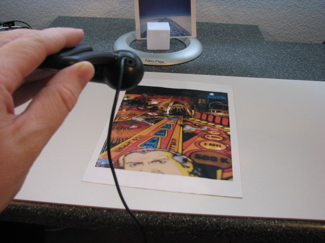
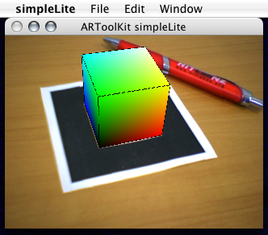

ARApp is designed specifically for the iOS environment, and so differs somewhat from the design of the examples for the desktop platforms. It respects the iOS's model-view-controller design pattern. Calls to ARToolKit's C functions (part of the "model") are made entirely by the ARViewController class. ARViewController is a subclass of UIViewController, and is designed to be able to be reused in your own applications. When instantiated, it opens a video window, and creates an OpenGL rendering context. When dismissed, it disposes of the OpenGL context and closes the video window.
As provided, the ARApp example includes a MainWindow NIB file which includes an instance of the ARViewController class. The application delegate and the ARViewController are connected in the NIB. You can easily modify this design, e.g. to load a different view controller when the application is opened. You could then instantiate ARViewController via a NIB or in code.
The OpenGL drawing code is contained within the ARView class and its superclass EAGLView. EAGLView extends UIView and implements either an OpenGL ES 1.1 or 2.0 rendering context. ARView extends the EAGLView class to provide important functionality for the AR environment, including compositing the OpenGL drawing together with the camera image.
The contents of the virtual environment are abstracted into the VirtualEnvironment class (instantiated by the view controller) and the VEObject class and its subclasses.
The virtual environment connects to the OpenGL drawing and the ARToolKit tracking using NSNotifications generated by the ARView and ARMarker classes. These classes uses NSNotifications to tell the virtual environment when to update object poses with newly-processed marker data, and when to draw the updated objects.
The ARMarker class includes a class method to read marker definitions from a file (markers.dat) and to instantiate ARMarker instances. Full support for filtering of marker poses is included in the ARMarker class. Filtering helps remove unwanted high-frequency "jittering" or "oscillating" of marker poses when the marker pose is poorly conditioned (typically when the marker is a long distance and/or perpendicular to the camera line-of-sight). Filtering can be very easily enabled by adding a line "FILTER 1" to a marker definition in the markers.dat file.
If you have any further questions about the design, or how the app fits together, please ask on the community forum (rather than by email) so that others can benefit from the answers.
This application displays models of Leonardo da Vinci’s inventions on your device.
nftSimple is an application that demonstrates natural feature tracking (NFT) alongside very simple rendering. When an NFT surface is recognized, the familiar color cube (also as rendered in the simpleLite example) will be drawn at the origin of the dataset's coordinate system.
For developers who are already familiar with the code of simpleLite, it will be useful to do a side-by-side comparison of the code of nftSimple. The basic flow of program operations (grab a frame, track markers, render) is very similar, however there are significant changes in how the marker information is handled, as well as the control flow in the tracking loop.
The NFT data set loaded by nftSimple is specified in the file "bin/Data2/markers.dat". This is a simple text file that specifies the number of markers, their type, and the path to their data. As supplied, this file points to the sample "pinball" dataset (an image of a pinball play surface), provided in ARToolKit/bin/DataNFT. This directory contains the required image set and feature sets. The original image file, pinball.jpg, is available in the directory path of [ARToolKit root]/doc/Marker images/.
[ARToolKit root]/doc/Marker images/pinball.jpg
The image is 1637 pixels wide and 2048 pixels high, with a resolution of 220 dots per inch (dpi). When printed at 1:1 scaling, its printed size should be 189.0 mm wide and 236.5 mm tall. This should fit comfortably onto a single sheet of A4 paper (210 mm x 297 mm) or US Letter paper (215.9 mm × 279.4 mm).
If instead you wish to print the image on smaller paper, the image can either be cropped top and bottom, or scaled to fit. Cropping will maintain correct distance measurements in ARToolKit, at the cost of perhaps losing some of the tracking points, whereas scaling will result in measurements returned by ARToolKit being scaled by the same amount.
[ARToolKit root]/bin/Data2 directory, overwriting the file camera_para.dat.Windows/Mac OS X: double click the "nftSimple" application in ARToolKit's bin directory.
Linux: from a terminal, cd to [ARToolKit root]/bin and type: ./nftSimple.
Once the application is running, point the camera at the image.

The tracking should rapidly pick up the image. Once the image is recognized, the color cube will be drawn at the origin of the page's coordinate system.
The applications "optical" and "opticalStereo" are example applications demonstrating monocular and *stereo optical see-through with a calibrated camera and display, respectively.
Data/camera_para.dat and calibrated optical see-through parameters from the file Data/optical_param.dat, so be sure that you have run the calibration programs (calib_camera and calib_optical) and moved the results of your calibration into the Data directory.The screen will initially be blank, as the application is in optical see-through mode. Just like calib_optical, if at any point you need to see the video-image (temporarily, e.g. to see if the camera is correctly focussed or has correct brightness or contrast) press the "o" key. While in this mode, you can press "d" to see the debug (binarized image) and "-" and "+" to adjust the binarization threshold to get nice black and white borders on the pattern.
When the Hiro marker is held in the field of view of the camera and display, you should see the OSG "axes" model overlaid on top of the marker. If your calibration was accurate the two should be quite well aligned (registered). If your calibration was poor, you will observe position and orientation offsets between the cube and the marker, and the 3D objects may appear to float above or below the cards or may be distorted. The same will apply if the camera has moved relative to the display since it was calibrated, or if the display has moved on your head, or if the calibration was done by another person.
Below is the listing for "optical":
<pre> Usage: ./optical [options] Options: --vconf <video parameter for the camera> --cpara <camera parameter file for the camera> -cpara=<camera parameter file for the camera> --width w Use display/window width of w pixels. --height h Use display/window height of h pixels. --refresh f Use display refresh rate of f Hz. --windowed Display in window, rather than fullscreen. --fullscreen Display fullscreen, rather than in window. -h -help --help: show this message </pre>
Below is the listing for "opticalStereo":
<pre> Usage: ./opticalStereo [options] Options: --vconf <video parameter for the camera> --cpara <camera parameter file for the camera> -cpara=<camera parameter file for the camera> --width w Use display/window width of w pixels. --height h Use display/window height of h pixels. --refresh f Use display refresh rate of f Hz. --windowed Display in window, rather than fullscreen. --fullscreen Display fullscreen, rather than in window. --stereo [INACTIVE|DUAL_OUTPUT|QUADBUFFERED|FRAME_SEQUENTIAL| SIDE_BY_SIDE|OVER_UNDER|HALF_SIDE_BY_SIDE| OVER_UNDER_HALF_HEIGHT|ANAGLYPH_RED_BLUE|ANAGLYPH_RED_GREEN ROW_INTERLACED|COLUMN_INTERLACED|CHECKERBOARD]. Select mono or stereo mode. (Not all modes supported). -h -help --help: show this message </pre>
If you want to change the markers, you can edit the file Data/markers.dat. If you want to change the content, edit the file Data/objects.dat.
Among the variety of example applications that are bundled with ARToolKit, simpleLight is the most straight-forward. The application is an example of traditional template marker tracking. It uses very simple marker embedded with a blank (white) marker image. When you install ARToolKit, you can find it with the other example applications in the bin directory. More examples, and explanations of their techniques can be found from the sidebar category "Examples".
After executing the application, the device's webcam is activated and scans the captured video stream for the preconfigured marker mentioned above. When the marker is recognized within the webcam's view, simpleLite tracks and superimposes a multi-colored, three dimensional, cube onto the marker's video image. The cube is tracked, aligned and affixed to the displayed video stream.
Running the simpleLight example application is one of the most straight-forward ways to test that your ARToolKit SDK installation is functioning correctly. It is recommended you do this when you install a new version of ARToolKit SDK.
Before starting the simpleLight application, print out the marker file using a high printer resolution or quality settings and using the A4 or Letter paper size setting. Also set the printer settings to scale the image to fit, scaling up the image to its maximum size on the paper, keeping a square aspect ratio (1:1). The marker file to print: ARTOOLKIT5_HOME/doc/patterns/Hiro pattern.pdf.
simpleLite can be opened by double-clicking its icon in the [ARToolKit root]\bin directory or from the same directory from the command line (cmd.exe) by entering simpleLite.exe.
Bundled applications are generated for the examples. Open the [ARToolKit root]/bin directory in the Finder and double-click the simpleLite.app example app.
The simpleLite application can be launched from a terminal window by entering ./simpleLite from its directory.
To demonstrate in detail how to develop an application, we will step through the source code for an existing example program: simpleLite. The source code for this program is found inside your ARToolKit installation in the directory examples/simpleLite/.

The file we will be looking at is simpleLite.c. This program simply consists of a main routine and several graphics drawing routines.
The functions which correspond to the six application steps previously described are shown in Table 1. The functions corresponding to steps 2 through 5 are called within the Idle() function.
| ARToolKit Step | Functions | |-------------------------------------------------------------------------|--------------------------------------| | 1. Initialize the video grabbing from the camera and load the marker(s) | setupCamera and setupMarker | | 2. Grab a video input frame | arVideoGetImage (called in mainLoop) | | 3. Detect the markers | arDetectMarker (called in mainLoop) | | 4. Calculate camera transformation | arGetTransMat (called in mainLoop) | | 5. Draw the virtual objects | Display | | 6. Close the application down | Quit |
The most important functions in the program related to AR are main, setupCamera, setupMarker, mainLoop, Display, and cleanup. In the remainder of this section we will explain the key pieces of code in these functions.
We will not cover every piece of code in simpleLite.c, but it is well commented and you should refer to the full code listing while following the text below.
One final piece of explanation before we begin. In simpleLite, we use just one other library, GLUT, to handle the interaction with the operating system. We use GLUT, the OpenGL utility toolkit, to do things like open a window, and handle keypresses. However, GLUT is not required, and can be replaced with any library you like, e.g. MFC on Windows, Cocoa on Mac OS X, or QT (cross platform). It is highly recommended that you become familiar with the basics of a GLUT-based OpenGL application before studying the code of simpleLite.c. The most effective way to do this is to read chapter 1 of the OpenGL Programming Guide, also known as the "Red Book". In particular, the hello.c sample code given in chapter 1 of the Red Book is the basis for the simpleLite.c code.
The main routine of simpleLite performs a number of setup tasks for the application. We will step through its code explaining the AR-specific functionality. The code in main() plus two setup functions called by main corresponds to step 1 in the table above.
The first piece of AR specific code is near the top of main, where we declare some variables that will be used to set up the application:
<pre> char cparam_name = "Data/camera_para.dat"; char vconf = ""; char *patt_name = "Data/patt.hiro"; </pre>
In this block, we define the pathname of the camera parameter file the application will use, the video capture library configuration string, and the name of the marker pattern file the application will load and try to recognize.
Next, we see the first AR-specific function call:
<pre> // ---------------------------------------------------------------------------- // Hardware setup. // if (!setupCamera(cparam_name, vconf, gARTThreshold, &gARTCparam, &gARHandle, &gAR3DHandle)) { fprintf(stderr, "main(): Unable to set up AR camera.\n"); exit(-1); } </pre>
setupCamera loads a file containing calibration parameters for a camera, opens a connection to the camera, sets some defaults (the binarization threshold in this case) and starts grabbing frames. It records its settings into 3 variables which are passed in as parameters. In our case, we will store these parameters in global variables. setupCamera is explained more fully below.
The next piece of code opens up a window for us to draw into. This code uses GLUT to open the window. Later, we will install some event handlers for the window, to handle redrawing, resizing etc.
<pre> // ---------------------------------------------------------------------------- // Library setup. // // Set up GL context(s) for OpenGL to draw into. glutInitDisplayMode(GLUT_DOUBLE | GLUT_RGBA | GLUT_DEPTH); if (!prefWindowed) { if (prefRefresh) sprintf(glutGamemode, "%ix%i:%i@%i", prefWidth, prefHeight, prefDepth, prefRefresh); else sprintf(glutGamemode, "%ix%i:%i", prefWidth, prefHeight, prefDepth); glutGameModeString(glutGamemode); glutEnterGameMode(); } else { glutInitWindowSize(prefWidth, prefHeight); glutCreateWindow(argv[0]); } </pre>
The code uses the value of a variable "prefWindowed" to decide whether to open a window, or whether to use fullscreen mode. Other variables prefWidth, prefHeight, prefDepth and prefRefresh are read to decide how many pixels wide and tall, what colour bit depth to use, and whether to change the refresh rate of the display. In simpleLite, these preferences are simply held in static variables defined near the top of main.c, but you could easily extend the example to load and save these preferences from and to a file, and allow the user to change them.
Next, now that we have a window from GLUT, we initialize the OpenGL part of our application. In this case, we are using the ARgsub_lite library to manage the interaction between the ARToolKit video capture and tracking, and OpenGL. At this point we also print out some debugging information in the user's console (or command line window), showing the startup parameters for the application. As well, we reset ARToolKit's timer (which can be used to keep track of frame rates).
<pre> // Setup ARgsub_lite library for current OpenGL context. if ((gArglSettings = arglSetupForCurrentContext(gARHandle)) == NULL) { fprintf(stderr, "main(): arglSetupForCurrentContext() returned error.\n"); Quit(); } debugReportMode(gARHandle, gArglSettings); glEnable(GL_DEPTH_TEST); arUtilTimerReset(); </pre>
The third major part of ARToolKit initialization is to load one or more markers which the camera should track. Information about the markers has previously been recorded into marker pattern files using the mk_patt utility (called "marker training"), so now we can load these files. In simpleLite, we will just use one marker, the default Hiro marker. The task of loading this marker and telling ARToolKit to track it is performed by the function called setupMarker().
Before entering a real-time tracking and drawing state, we need to initialize the ARToolKit application parameters. The key parameters for an ARToolKit application are:
setupCamera begins by opening a connection to the video camera from which images for tracking will be acquired, using arVideoOpen(). The parameter vconf, passed to arVideoOpen is a string that can be used to request some video configuration other than the default. The contents of the vconf string are dependent on the video library being used. More information can be found in [Configuring video capture in ARToolKit][3] At this point we also find out from the video camera library how big the images it will supply will be, and what pixel format will be used:
<pre> static int setupCamera(const char cparam_name, char vconf, int threshold, ARParam *cparam, ARHandle arhandle, AR3DHandle ar3dhandle) { ARParam wparam; int xsize, ysize; int pixFormat; // Open the video path. if (arVideoOpen(vconf) < 0) { fprintf(stderr, "setupCamera(): Unable to open connection to camera.\n"); return (FALSE); } // Find the size of the window. if (arVideoGetSize(&xsize, &ysize) < 0) return (FALSE); fprintf(stdout, "Camera image size (x,y) = (%d,%d)\n", xsize, ysize); // Get the format in which the camera is returning pixels. pixFormat = arVideoGetPixelFormat(); if (pixFormat < 0 ) { fprintf(stderr, "setupCamera(): Camera is using unsupported pixel format.\n"); return (FALSE); } </pre>
Next we deal with the structures that ARToolKit uses to hold its model of the camera's parameters. These parameters are generated by the camera calibration process. (Covered in the next chapter.) The camera parameter file is loaded with the call to arParamLoad, with the path to the file being passed in a c-string as a parameter.
Once the camera parameters are loaded, we adjust them to match the actual video image size being supplied by the video library, and then initialize a few necessary ARToolKit structures that depend on the camera parameters:
<pre> // Load the camera parameters, resize for the window and init. if (arParamLoad(cparam_name, 1, &wparam) < 0) { fprintf(stderr, "setupCamera(): Error loading parameter file %s for camera.\n", cparam_name); return (FALSE); } arParamChangeSize(&wparam, xsize, ysize, cparam); fprintf(stdout, " Camera Parameter \n"); arParamDisp(cparam); if ((arhandle = arCreateHandle(cparam)) == NULL) { fprintf(stderr, "setupCamera(): Error: arCreateHandle.\n"); return (FALSE); } if (arSetPixelFormat(arhandle, pixFormat) < 0) { fprintf(stderr, "setupCamera(): Error: arSetPixelFormat.\n"); return (FALSE); } </pre>
We complete our setupCamera by setting up some defaults related to the tracking portion of ARToolKit. These include debug mode, the labelling threshold, and the structure used to hold positions of detected patterns. Finally, we start the video library capturing frames, since we will soon be ready to process them:
<pre> if (arSetDebugMode(arhandle, AR_DEBUG_DISABLE) < 0) { fprintf(stderr, "setupCamera(): Error: arSetDebugMode.\n"); return (FALSE); } if (arSetLabelingThresh(arhandle, threshold) < 0) { fprintf(stderr, "setupCamera(): Error: arSetLabelingThresh.\n"); return (FALSE); } if ((*ar3dhandle = ar3DCreateHandle(cparam)) == NULL) { fprintf(stderr, "setupCamera(): Error: ar3DCreateHandle.\n"); return (FALSE); } if (arVideoCapStart() != 0) { fprintf(stderr, "setupCamera(): Unable to begin camera data capture.\n"); return (FALSE); } return (TRUE); } </pre>
The second major part of ARToolKit setup is to load pattern files for each of the patterns we wish to detect. In simpleLite, we will only track one pattern, the basic "Hiro" pattern. setupMarker creates a list of patterns for ARToolKit to track, and loads the Hiro pattern into it. Loading multiple patterns can be seen in the simpleVRML example, and is covered in a later chapter of the documentation.
<pre> static int setupMarker(const char patt_name, int patt_id, ARHandle arhandle, ARPattHandle **pattHandle) { if ((pattHandle = arPattCreateHandle()) == NULL) { fprintf(stderr, "setupCamera(): Error: arPattCreateHandle.\n"); return (FALSE); } // Loading only 1 pattern in this example. if ((patt_id = arPattLoad(pattHandle, patt_name)) < 0) { fprintf(stderr, "setupMarker(): pattern load error !!\n"); arPattDeleteHandle(pattHandle); return (FALSE); } arPattAttach(arhandle, pattHandle); return (TRUE); } </pre>
This is the routine where the bulk of the ARToolKit function calls are made and it contains code corresponding to steps 2 through 5 of the required application steps.
First a new video frame is requested using the function arVideoGetImage. If the function returns non-NULL, a new frame has been captured, and the return value points to the buffer containing the frame's pixel data, so we save it in a global variable.
<pre> // Grab a video frame. if ((image = arVideoGetImage()) != NULL) { gARTImage = image; // Save the fetched image. gCallCountMarkerDetect++; // Increment ARToolKit FPS counter. </pre>
Every time a new frame has been acquired, it needs to be searched for markers. This is accomplished by a call to the function arDetectMarker(), passing in the pointer to the new frame, and an ARHandle. The ARHandle holds the ARToolKit marker detection settings and also stores the results of the marker detection.
<pre> // Detect the markers in the video frame. if (arDetectMarker(gARHandle, gARTImage) < 0) { exit(-1); } </pre>
The results of the marker detection process can now be examined in detail, to check whether they match the IDs of the marker(s) we loaded earlier. Of course, in simpleLite, we only need to check for one marker, the Hiro marker. We use a value known as the marker confidence to make sure that we have got the Hiro marker and not a marker with a different pattern.
<pre> // Check through the marker_info array for highest confidence // visible marker matching our preferred pattern. k = -1; for (j = 0; j < gARHandle->marker_num; j++) { if (gARHandle->markerInfo[j].id == gPatt_id) { if (k == -1) k = j; // First marker detected. else if (gARHandle->markerInfo[j].cf > gARHandle->markerInfo[k].cf) k = j; // Higher confidence marker detected. } } </pre>
At the end of this loop, if k has been modified, then we have found the marker containing the Hiro pattern, so the last task we ask ARToolKit to perform on the marker is to retrieve its position and orientation (its "pose") relative to the camera. The pose is stored in an AR3DHandle structure, which we conveniently prepared earlier (in setupCamera)!
If the marker is not found, we also note that fact, because if no markers are found, we should not try to draw any 3D objects in the frame. (Drawing is discussed below).
<pre> if (k != -1) { // Get the transformation between the marker and the real camera into gPatt_trans. err = arGetTransMatSquare(gAR3DHandle, &(gARHandle->markerInfo[k]), gPatt_width, gPatt_trans); gPatt_found = TRUE; } else { gPatt_found = FALSE; } </pre>
Finally, since we have a new video frame, we request that the operating system call our Display function:
<pre> glutPostRedisplay(); </pre>
We can conceive of our program running two loops in parallel; one (in mainLoop()) grabs images from the camera and looks for markers in them. The other loop displays images and 3D objects over the top of detected marker positions, or other AR-related content we might want to draw.
These two loops run separately, because the operating system separates drawing from other regular tasks, to work more efficiently. In simpleLite, the drawing all happens in the function named Display(). (This gets called by the operating system via GLUT).
In the display function, we do several steps:
Step 1: Clear the screen and draw the most recent frame from the camera as a video background:
<pre> // Select correct buffer for this context. glDrawBuffer(GL_BACK); glClear(GL_COLOR_BUFFER_BIT | GL_DEPTH_BUFFER_BIT); // Clear the buffers for new frame. arglDispImage(gARTImage, &gARTCparam, 1.0, gArglSettings); // zoom = 1.0. gARTImage = NULL; </pre>
The video image is then displayed on screen. This can either be an unwarped image, or an image warped to correct for camera distortions. Unwarping the camera's distorted image helps the virtual 3D objects appear in the correct place on the video frame.
Step 2: Set up the OpenGL camera projection to match the calibrated ARToolKit camera parameters.
<pre> // Projection transformation. arglCameraFrustumRH(&gARTCparam, VIEW_DISTANCE_MIN, VIEW_DISTANCE_MAX, p); glMatrixMode(GL_PROJECTION); glLoadMatrixd(p); glMatrixMode(GL_MODELVIEW); // Viewing transformation. glLoadIdentity(); </pre>
The call to arglCameraFrustumRH converts the camera parameters stored in gARTCparam into an OpenGL projection matrix p, which is then loaded directly, setting the OpenGL camera projection. With this, the field-of-view, etc. of the real camera will be exactly matched in the scene.
Step 3: Check whether we have any active markers, and if so, position the OpenGL camera view for each one to place the coordinate system origin onto the marker.
<pre> if (gPatt_found) { // Calculate the camera position relative to the marker. // Replace VIEW_SCALEFACTOR with 1.0 to make one drawing unit equal to 1.0 ARToolKit units (usually millimeters). arglCameraViewRH(gPatt_trans, m, VIEW_SCALEFACTOR); glLoadMatrixd(m); </pre>
arglCameraViewRH converts the marker transformation (saved in mainLoop) into an OpenGL modelview matrix. These sixteen values are the position and orientation values of the real camera, so using them to set the position of the virtual camera causes any graphical objects to be drawn to appear exactly aligned with the corresponding physical marker.
The virtual camera position is set using the OpenGL function glLoadMatrixd(m).
Step 4: Draw objects on top of any active markers (using the OpenGL camera).
Finally, The last part of the code is the rendering of the 3D object, in this example the OpenGL color cube. This function is simply an example (look at the code for drawCube if you are curious) and can be replaced with any drawing code. Simply, at the time the draw function is called, the OpenGL coordinate system origin is exactly in the middle of the marker, with the marker lying in the x-y plane (x to the right, y upwards) and with the z axis pointing towards the viewer.
If you are drawing directly onto a marker, remember not to draw in the -z part of the OpenGL coordinate system, or else your drawing will look odd, as it will be drawn "behind" the marker.
The cleanup function is called to stop ARToolKit and release resources used by it, in a clean manner:
<pre> static void cleanup(void) { arglCleanup(gArglSettings); arPattDetach(gARHandle); arPattDeleteHandle(gARPattHandle); arVideoCapStop(); ar3DDeleteHandle(gAR3DHandle); arDeleteHandle(gARHandle); arVideoClose(); } </pre>
Cleanup steps are generally performed in reverse order to setup steps. NB: your application may have to perform other cleanup steps, but these are the ones required by ARToolKit.
Cleanup step !Functions to be called.
remove ARToolKit's connections to OpenGL arglCleanup release resources used in the marker tracking arPattDetach, arPattDeleteHandle, ar3DDeleteHandle, arDeleteHandle stop the video capture and close down the video path to free it up for other applications arVideoCapStop, arVideoClose
../_media/ Steps in cleaning up ARToolKit.
Most of simpleLite.c is well commented, and shouldn't be hard to follow. There are a few other areas of ARToolKit-specific code, mostly relating to debug mode. Look at the definition of Keyboard() for more.
That's it! With these few simple function calls, you can create a fully-functioning AR application! Of course, ARToolKit has much more functionality, and can be operated at a lower level; more of this is covered in later tutorials.
At this stage, have a play with the simpleLite code. When you are ready, come back and read on to the next tutorial, in which we will cover drawing on top of multiple markers, and working out the relationships between markers.